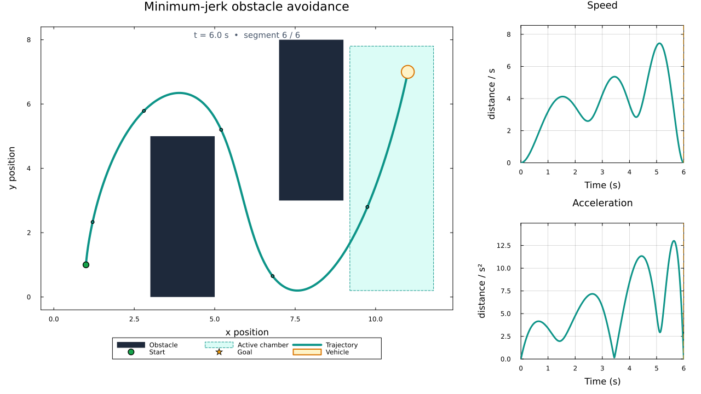
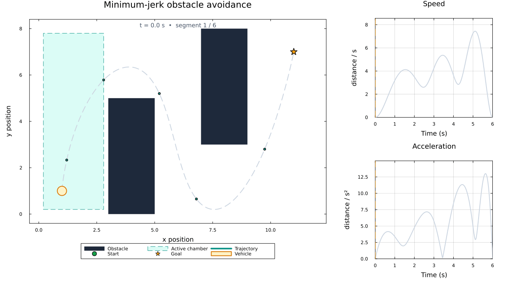

Trajectory planning around obstacles

 Adapted from: Joey Huchette's SIAM Optimization 2017 talk, Mixed-Integer Sum of Squares Optimization: Computation and Application. We use a compact slalom with two obstacles to illustrate the formulation.
Adapted from: Joey Huchette's SIAM Optimization 2017 talk, Mixed-Integer Sum of Squares Optimization: Computation and Application. We use a compact slalom with two obstacles to illustrate the formulation.
We plan a smooth trajectory for a circular vehicle. Binary variables choose a safe chamber for each time interval, and sum-of-squares constraints keep the trajectory in that chamber for the entire interval. In particular, collision avoidance does not rely on a time discretization.
using SumOfSquares
using DynamicPolynomials
using LinearAlgebraGeometry
The workspace is [0, 12] × [0, 8]. Two walls force the vehicle to go above the first obstacle and below the second. The free space is covered by five overlapping rectangular chambers.
struct Box
xl::Float64
yl::Float64
xu::Float64
yu::Float64
end
obstacles = [Box(3, 0, 5, 5), Box(7, 3, 9, 8)]
boxes = [
Box(0, 0, 3, 8),
Box(0, 5, 7, 8),
Box(5, 0, 7, 8),
Box(5, 0, 12, 3),
Box(9, 0, 12, 8),
]
start = [1.0, 1.0]
goal = [11.0, 7.0]2-element Vector{Float64}:
11.0
7.0Shrinking each chamber by the vehicle radius ensures that the whole vehicle fits in the original chamber when its center lies in the smaller chamber. The overlaps allow smooth transitions between chambers.
vehicle_radius = 0.2
safe_boxes = [
Box(
b.xl + vehicle_radius,
b.yl + vehicle_radius,
b.xu - vehicle_radius,
b.yu - vehicle_radius,
) for b in boxes
]
function in_box(point, box; atol = 0.0)
return box.xl - atol ≤ point[1] ≤ box.xu + atol &&
box.yl - atol ≤ point[2] ≤ box.yu + atol
endin_box (generic function with 1 method)Mixed-integer SOS model
Pajarito combines a mixed-integer linear solver with a continuous conic solver. Here we use HiGHS for the integer decisions and Clarabel for the semidefinite and second-order cone subproblems.
import Pajarito, HiGHS, Clarabel
solver = optimizer_with_attributes(
Pajarito.Optimizer,
"oa_solver" => optimizer_with_attributes(
HiGHS.Optimizer,
MOI.Silent() => true,
"mip_rel_gap" => 1e-6,
),
"conic_solver" =>
optimizer_with_attributes(Clarabel.Optimizer, MOI.Silent() => true),
"time_limit" => 120.0,
"tol_rel_gap" => 1e-4,
)
model = SOSModel(solver)A JuMP Model
├ solver: Pajarito
├ objective_sense: FEASIBILITY_SENSE
├ num_variables: 0
├ num_constraints: 0
└ Names registered in the model: noneWe use six one-second intervals and a quintic polynomial for each coordinate on each interval. Every segment uses a local time t ∈ [0, 1], which avoids high powers of the global time. The same construction can be used with higher-degree polynomials by also increasing the quadrature order in the objective below.
N = 6
trajectory_degree = 5
@polyvar t
interval = @set t * (1 - t) ≥ 0
@variable(model, p[1:2, 1:N], Poly(monomials([t], 0:trajectory_degree)))
@variable(model, H[1:N, 1:length(boxes)], Bin)6×5 Matrix{VariableRef}:
H[1,1] H[1,2] H[1,3] H[1,4] H[1,5]
H[2,1] H[2,2] H[2,3] H[2,4] H[2,5]
H[3,1] H[3,2] H[3,3] H[3,4] H[3,5]
H[4,1] H[4,2] H[4,3] H[4,4] H[4,5]
H[5,1] H[5,2] H[5,3] H[5,4] H[5,5]
H[6,1] H[6,2] H[6,3] H[6,4] H[6,5]Exactly one chamber is selected on each interval. The following big-M constraints reduce to the selected chamber's bounds when H[j, k] = 1. Otherwise they reduce to the workspace bounds, so the constants come directly from the geometry. The degree-six SOS certificates are sufficient for these quintic univariate bounds on the interval.
for j in 1:N
@constraint(model, sum(H[j, :]) == 1)
for (k, box) in enumerate(safe_boxes)
lower = (box.xl, box.yl)
upper = (box.xu, box.yu)
workspace_upper = (12, 8)
for axis in 1:2
@constraint(
model,
p[axis, j] ≥ lower[axis] * H[j, k],
domain = interval,
maxdegree = trajectory_degree + 1
)
@constraint(
model,
p[axis, j] ≤
workspace_upper[axis] +
(upper[axis] - workspace_upper[axis]) * H[j, k],
domain = interval,
maxdegree = trajectory_degree + 1
)
end
end
endThe vehicle starts and finishes at rest, with zero acceleration. Matching position, velocity, and acceleration at every junction makes the complete trajectory twice continuously differentiable.
velocity = differentiate.(p, t)
acceleration = differentiate.(velocity, t)
jerk = differentiate.(acceleration, t)
for (order, derivative) in enumerate((p, velocity, acceleration)), axis in 1:2
@constraint(
model,
derivative[axis, 1](t => 0) == (order == 1 ? start[axis] : 0)
)
@constraint(
model,
derivative[axis, N](t => 1) == (order == 1 ? goal[axis] : 0)
)
for j in 1:(N-1)
@constraint(
model,
derivative[axis, j](t => 1) == derivative[axis, j+1](t => 0)
)
end
endTwo consecutive chambers must overlap. These redundant linear constraints help the integer solver rule out impossible transitions before solving an SDP. Similarly, the first and last chamber must contain the endpoints.
compatible = [
max(a.xl, b.xl) ≤ min(a.xu, b.xu) && max(a.yl, b.yl) ≤ min(a.yu, b.yu)
for a in safe_boxes, b in safe_boxes
]
for k in eachindex(safe_boxes)
if !in_box(start, safe_boxes[k])
fix(H[1, k], 0; force = true)
end
if !in_box(goal, safe_boxes[k])
fix(H[N, k], 0; force = true)
end
for j in 1:(N-1)
@constraint(
model,
H[j, k] ≤
sum(H[j+1, l] for l in eachindex(safe_boxes) if compatible[k, l])
)
end
endMinimum-jerk objective
We minimize the integral of squared jerk, a common measure of trajectory smoothness. The jerk of a quintic is quadratic, so three-point Gauss-Legendre quadrature integrates its square exactly. These points are only used for the objective; collision avoidance is still continuous. Dividing jerk by the workspace width improves numerical scaling without changing the minimizing trajectory.
nodes = [(1 - sqrt(3 / 5)) / 2, 0.5, (1 + sqrt(3 / 5)) / 2]
weights = [5 / 18, 4 / 9, 5 / 18]
weighted_jerk = [
sqrt(weight) / 12 * jerk[axis, j](t => node) for
axis in 1:2, j in 1:N, (node, weight) in zip(nodes, weights)
]2×6×3 Array{AffExpr, 3}:
[:, :, 1] =
0.26352313834736496 _[4] + 0.11879798623086686 _[5] + 0.03347182722980223 _[6] … 0.26352313834736496 _[64] + 0.11879798623086686 _[65] + 0.03347182722980223 _[66]
0.26352313834736496 _[10] + 0.11879798623086686 _[11] + 0.03347182722980223 _[12] 0.26352313834736496 _[70] + 0.11879798623086686 _[71] + 0.03347182722980223 _[72]
[:, :, 2] =
0.3333333333333333 _[4] + 0.6666666666666666 _[5] + 0.8333333333333333 _[6] … 0.3333333333333333 _[64] + 0.6666666666666666 _[65] + 0.8333333333333333 _[66]
0.3333333333333333 _[10] + 0.6666666666666666 _[11] + 0.8333333333333333 _[12] 0.3333333333333333 _[70] + 0.6666666666666666 _[71] + 0.8333333333333333 _[72]
[:, :, 3] =
0.26352313834736496 _[4] + 0.9352945671585929 _[5] + 2.0747132795491177 _[6] … 0.26352313834736496 _[64] + 0.9352945671585929 _[65] + 2.0747132795491177 _[66]
0.26352313834736496 _[10] + 0.9352945671585929 _[11] + 2.0747132795491177 _[12] 0.26352313834736496 _[70] + 0.9352945671585929 _[71] + 2.0747132795491177 _[72]A rotated second-order cone bounds the sum of squared weighted jerk values by jerk_cost.
@variable(model, jerk_cost ≥ 0)
@constraint(
model,
[jerk_cost / 2; 1; vec(weighted_jerk)] in RotatedSecondOrderCone()
)
@objective(model, Min, jerk_cost)
optimize!(model)
solution_summary(model)solution_summary(; result = 1, verbose = false)
├ solver_name : Pajarito
├ Termination
│ ├ termination_status : OPTIMAL
│ ├ result_count : 1
│ ├ raw_status : OPTIMAL
│ └ objective_bound : 1.17935e+01
├ Solution (result = 1)
│ ├ primal_status : FEASIBLE_POINT
│ ├ dual_status : NO_SOLUTION
│ ├ objective_value : 1.17935e+01
│ └ relative_gap : 0.00000e+00
└ Work counters
├ solve_time (sec) : 3.11032e+00
└ node_count : 3The chosen chambers and the polynomial coefficients are obtained as follows.
selection = [argmax(value.(H[j, :])) for j in 1:N]
position_opt = value.(p)
velocity_opt = value.(velocity)
acceleration_opt = value.(acceleration)
selection6-element Vector{Int64}:
1
1
2
3
4
5We check the endpoints, the junctions, and the selected chamber bounds. Sampling here is a numerical check of the returned solution, in addition to the SOS constraints imposed on the whole interval.
Visualization
The left panel shows the path and the selected safe chamber. The circular marker has the same radius as the vehicle in the model. The right panels show the speed and acceleration, which remain continuous across segment boundaries.
import Plots
function evaluate_trajectory(polynomials, time)
segment = min(floor(Int, time) + 1, N)
local_time = time - segment + 1
return [q(t => local_time) for q in polynomials[:, segment]]
end
sample_times = range(0, N; length = 601)
path =
hcat([evaluate_trajectory(position_opt, time) for time in sample_times]...)
speeds =
[norm(evaluate_trajectory(velocity_opt, time)) for time in sample_times]
accelerations =
[norm(evaluate_trajectory(acceleration_opt, time)) for time in sample_times]
function box_shape(box)
return Plots.Shape(
[box.xl, box.xu, box.xu, box.xl],
[box.yl, box.yl, box.yu, box.yu],
)
end
function motion_profile(values, time, title, unit)
plot = Plots.plot(
sample_times,
values;
color = "#cbd5e1",
linewidth = 2,
label = false,
title = title,
xlabel = "Time (s)",
ylabel = unit,
xlims = (0, N),
ylims = (0, 1.15 * maximum(values)),
gridalpha = 0.15,
framestyle = :box,
titlefontsize = 12,
)
past = sample_times .≤ time
Plots.plot!(
plot,
sample_times[past],
values[past];
color = "#0d9488",
linewidth = 3,
label = false,
)
Plots.vline!(
plot,
[time];
color = "#f59e0b",
linewidth = 2,
linestyle = :dash,
label = false,
)
return plot
end
function trajectory_figure(time = N)
segment = min(floor(Int, time) + 1, N)
scene = Plots.plot(;
xlims = (-0.4, 12.4),
ylims = (-0.4, 8.4),
aspect_ratio = :equal,
xlabel = "x position",
ylabel = "y position",
title = "Minimum-jerk obstacle avoidance",
titlefontsize = 15,
grid = false,
framestyle = :box,
legend = :outerbottom,
legend_columns = 3,
)
for (i, obstacle) in enumerate(obstacles)
Plots.plot!(
scene,
box_shape(obstacle);
color = "#1e293b",
linewidth = 0,
label = i == 1 ? "Obstacle" : false,
)
end
Plots.plot!(
scene,
box_shape(safe_boxes[selection[segment]]);
fillcolor = "#99f6e4",
fillalpha = 0.35,
linecolor = "#0d9488",
linestyle = :dash,
label = "Active chamber",
)
Plots.plot!(
scene,
path[1, :],
path[2, :];
color = "#cbd5e1",
linewidth = 2,
linestyle = :dash,
label = false,
)
past = sample_times .≤ time
Plots.plot!(
scene,
path[1, past],
path[2, past];
color = "#0d9488",
linewidth = 4,
label = "Trajectory",
)
junctions = hcat([evaluate_trajectory(position_opt, j) for j in 0:N]...)
Plots.scatter!(
scene,
junctions[1, :],
junctions[2, :];
color = "#0d9488",
markersize = 3,
label = false,
)
Plots.scatter!(
scene,
[start[1]],
[start[2]];
color = "#16a34a",
markersize = 6,
label = "Start",
)
Plots.scatter!(
scene,
[goal[1]],
[goal[2]];
color = "#f59e0b",
marker = :star5,
markersize = 9,
label = "Goal",
)
point = evaluate_trajectory(position_opt, time)
angles = range(0, 2π; length = 40)
vehicle = Plots.Shape(
point[1] .+ vehicle_radius .* cos.(angles),
point[2] .+ vehicle_radius .* sin.(angles),
)
Plots.plot!(
scene,
vehicle;
fillcolor = "#fef3c7",
linecolor = "#d97706",
linewidth = 2,
label = "Vehicle",
)
Plots.annotate!(
scene,
6,
8.15,
Plots.text(
"t = $(round(time; digits = 2)) s • segment $segment / $N",
10,
"#475569",
),
)
speed = motion_profile(speeds, time, "Speed", "distance / s")
acceleration =
motion_profile(accelerations, time, "Acceleration", "distance / s²")
layout = Plots.@layout [a{0.72w} [b; c]]
return Plots.plot(
scene,
speed,
acceleration;
layout = layout,
size = (1280, 720),
margin = 6 * Plots.mm,
background_color = :white,
)
end
figure = trajectory_figure()
Plots.savefig(figure, "obstacles.png")
figure
Animation and video
Plots records frames of the same figure as the vehicle follows the solved trajectory. At 20 frames per second this plays back in real time. Both formats use the same frames: an MP4 for sharing and an animated GIF that can be displayed directly in a notebook or this tutorial.
animation = Plots.@animate for time in range(0, N; length = 20N + 1)
trajectory_figure(time)
end
Plots.mp4(animation, "obstacles.mp4"; fps = 20);
Plots.gif(animation, "obstacles.gif"; fps = 20)
Download the MP4 video or the static plot.

This page was generated using Literate.jl.